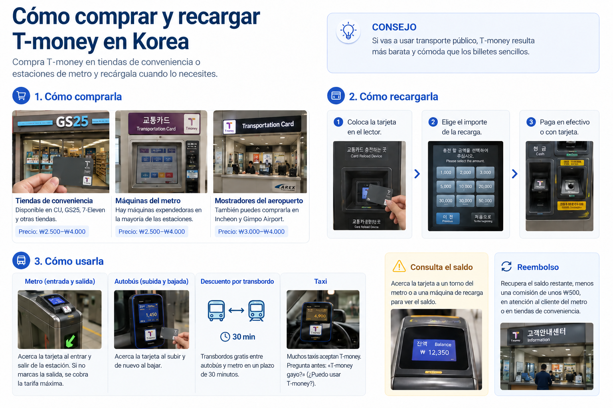
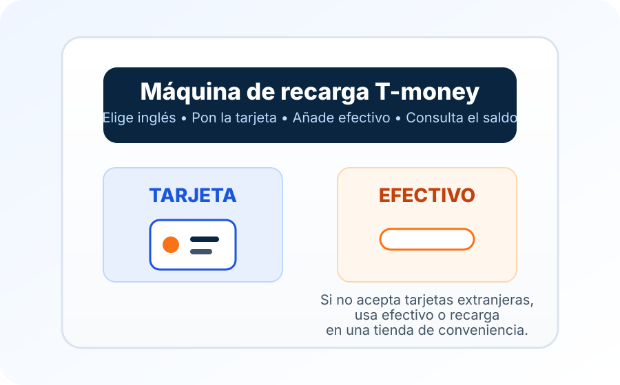

La mayoría de los visitantes no necesita entender todo el sistema de pago del transporte de Korea. Necesita algo que funcione cuando termina el trayecto desde el aeropuerto y empieza el transporte urbano normal. Una tarjeta física T-money sigue cumpliendo bien esa función: añade wones coreanos, pásala por el torno o el lector del autobús y sigue usando la misma tarjeta en gran parte de la red de transporte público de Korea.
Desde julio de 2025, los iPhone y Apple Watch compatibles pueden utilizar T-money en Apple Wallet. Para comprarla o recargarla directamente desde Wallet sigue siendo necesaria una tarjeta de crédito o débito emitida en Corea del Sur. Los viajeros internacionales cuentan con otra vía: la app MobileTmoney permite recargar mediante Apple Pay con algunas redes de tarjetas extranjeras compatibles. Si tu teléfono o tu tarjeta no admite esa vía, la T-money física sigue siendo la alternativa más sencilla.
¿Tarjeta física, iPhone o Android?
La versión adecuada de T-money depende menos de qué tecnología parezca más fácil y más de cómo puedas cargar dinero en ella.
T-money física
T-money en Apple Wallet
App KOREA TOUR CARD Tmoney
Para quién encaja mejor
La mayoría de los visitantes, especialmente quienes solo disponen de tarjetas de pago emitidas en el extranjero
Usuarios de iPhone o Apple Watch compatibles: pueden recargar directamente desde Wallet con una tarjeta emitida en Corea del Sur o usar MobileTmoney si su tarjeta de Apple Pay pertenece a una red admitida
Viajeros con un teléfono Android compatible con NFC que quieran una opción móvil
Cómo se obtiene
Compra una tarjeta después de llegar
Añade una tarjeta T-money prepago en Apple Wallet
Emite y gestiona T-money mediante la app KOREA TOUR CARD Tmoney
Cómo añadir dinero
El efectivo en máquinas de recarga del metro o en tiendas de conveniencia participantes es la opción más segura
Compra o recarga directa en Apple Wallet: requiere una tarjeta de crédito o débito emitida en Corea del Sur. MobileTmoney: recarga con Apple Pay mediante Mastercard, American Express, UnionPay o JCB, si la tarjeta es compatible
La app oficial anuncia actualmente recargas y reembolsos con tarjetas internacionales compatibles
Principal inconveniente
Tienes que llevar la tarjeta y puede que todavía necesites efectivo para recargarla
La recarga directa en Wallet exige una tarjeta emitida en Corea del Sur; MobileTmoney solo admite las redes extranjeras anunciadas y Visa no figura entre ellas
La compatibilidad del teléfono y de NFC importa, así que comprueba la app antes de depender de ella
Para un viaje corto, elegir la tarjeta física no tiene nada de anticuado. A menudo es la opción que plantea menos complicaciones a un visitante extranjero.
Prepara los datos móviles para tu viaje a Corea
T-money sirve para pagar el metro y el autobús. Una eSIM de viaje puede darte datos para mapas, rutas y mensajes, pero no sustituye a T-money ni recarga el saldo de transporte. Antes de comprar, comprueba que tu móvil admite eSIM y revisa las condiciones del plan.
Enlace de afiliado: Korea Inside puede recibir una comisión sin coste adicional para ti.
Comprar una tarjeta física T-money
La información actual de VisitKorea indica que se pueden comprar tarjetas T-money en tiendas de conveniencia como GS25, CU y 7-ELEVEN en todo el país, así como en centros de información de estaciones del metro de Seoul en las líneas 1 a 8. Los precios generales de las tarjetas se sitúan actualmente en unos ₩3,000 a ₩5,000, aunque pueden variar según el diseño y el vendedor.
Para la mayoría de los visitantes, hay pocas razones para convertir esto en una compra previa al viaje. Comprarla después de llegar suele ser sencillo. Busca el logotipo de T-money en una tienda de conveniencia o estación en lugar de buscar una versión turística especial de la tarjeta.
El precio de la tarjeta y el dinero cargado en ella son cosas separadas. Si compras la tarjeta y vas directamente a un torno del metro sin añadir saldo, la tarjeta por sí sola no te permite viajar.
¿Puede mi familia compartir una sola tarjeta T-money?
Para pasar por los tornos del metro, calcula una tarjeta por cada viajero que tenga que pagar billete. No se puede pasar la misma tarjeta varias veces para que entre toda la familia por tornos distintos. Cada menor que deba pagar necesita su propia tarjeta, con la categoría de edad correspondiente registrada.
En algunos autobuses de Seúl, el conductor puede cobrar a varias personas con una sola tarjeta si le indicas cuántas viajan antes de pasarla. Es un procedimiento específico del autobús, no una alternativa a las tarjetas individuales si el trayecto también incluye el metro. Los descuentos por transbordo para varios pasajeros tienen más restricciones, sobre todo al cambiar después a un tren. Para la mayoría de las familias, una tarjeta por persona que paga evita complicaciones.
¿Puedo reutilizar una tarjeta T-money de un viaje anterior a Corea?
Antes de comprar otra tarjeta, comprueba el saldo de la que conservas. Una T-money normal que siga funcionando quizá te sirva en otra visita, pero no des por hecho que una tarjeta antigua o promocional se aceptará en todas partes. Si una máquina no la reconoce, consulta al personal de una estación de metro o de un punto T-money participante antes de cargar más dinero.
¿Qué hago si llego tarde por la noche al aeropuerto de Incheon?
Busca una tienda de conveniencia que venda T-money en tu terminal de llegada o cerca de la estación del tren del aeropuerto. Confirma que tenga tarjetas disponibles y que pueda recargarlas: estar abierta hasta tarde no garantiza todos los modelos ni servicios. Si no consigues comprarla fácilmente, un billete independiente para el AREX Express u otro traslado de aeropuerto confirmado te permite llegar a Seúl y comprar T-money para los días siguientes.
¿Cuánto saldo deberías cargar?
Rara vez hay una buena razón para cargar una cantidad grande el primer día.
Para un viaje corto a Seoul, Korea Inside normalmente empezaría con unos ₩20,000 a ₩30,000 y añadiría más después. Es una recomendación de planificación, no una norma oficial de T-money. Lo que gastes realmente dependerá de cuántas veces viajes, de la distancia y de si también usas el saldo en comercios participantes.
Empezar con menos saldo también facilita el final del viaje. Resulta mucho menos molesto terminar con unos pocos miles de wones que con un saldo grande que de repente tengas que reembolsar antes de ir al aeropuerto.
Recargar una tarjeta física
Para una tarjeta física T-money normal, el efectivo sigue siendo la opción más segura para un visitante extranjero. Las máquinas de recarga del metro son sencillas cuando sabes dónde está la ranura para billetes, y las tiendas de conveniencia participantes también pueden añadir saldo a la tarjeta.
No confundas esto con las nuevas máquinas de billetes de Seoul que aceptan tarjetas internacionales. En 2026, Seoul amplió los pagos con tarjetas de crédito y débito extranjeras en nuevos quioscos del metro para productos como los pases de corta duración de Climate Card y los billetes de un solo trayecto. Eso no significa que todas las máquinas normales de recarga de T-money acepten ahora tarjetas extranjeras.
Si una máquina rechaza tu tarjeta, no tiene sentido seguir intentando con el mismo método de pago. Usa wones coreanos o lleva la tarjeta T-money a una tienda de conveniencia participante.
El saldo que aparece en un torno del metro o en una máquina de recarga es suficiente para la mayoría de los visitantes. Añade dinero cuando empiece a bajar en lugar de intentar calcular por adelantado todo el viaje.
¿Por qué la máquina acepta mi tarjeta extranjera para un billete, pero no para recargar T-money?
Lo importante es qué producto estás comprando en la pantalla. Desde marzo de 2026, algunas máquinas nuevas del metro de Seúl aceptan tarjetas emitidas en el extranjero para productos concretos, como billetes de un solo trayecto y abonos de corta duración de Climate Card. Eso no significa que se pueda recargar con una tarjeta extranjera cualquier T-money física de prepago. Las indicaciones municipales de septiembre de 2026 siguen distinguiendo esas compras con tarjeta de las recargas de tarjetas prepago habituales.
Si hoy necesitas recargar una T-money de plástico normal, lleva wones en efectivo y elige la función de recarga de tarjeta física, o pide que añadan saldo en una tienda de conveniencia participante. Haber comprado un billete de un trayecto con una Visa o Mastercard extranjera no demuestra que esa misma máquina pueda recargar T-money. Comprar una tarjeta, comprar un billete y cargar saldo de transporte son tres operaciones distintas.
He pagado una recarga, pero el saldo no ha cambiado. ¿Qué hago?
Antes de pagar otra vez, comprueba el saldo realmente guardado en la tarjeta en una máquina de la estación, un mostrador participante u otro medio fiable.
Conserva el recibo o justificante y anota la tienda o máquina, la hora, el importe y la tarjeta utilizada. Si has recargado dos tarjetas, comprueba cada una por separado.
Si aún estás en la tienda, pide al personal de caja que confirme que la recarga se hizo en la tarjeta correcta. En una estación, solicita al personal que compruebe tanto la tarjeta como la máquina.
Si el pago y el saldo no coinciden, presenta los justificantes al establecimiento donde pagaste o al servicio de atención de T-money. No des por hecho que se trata de un fraude ni pagues repetidamente antes de verificar la primera operación.
No es lo mismo que ver menos saldo tras terminar un viaje: en ese caso, puede haberse cobrado correctamente una tarifa o un ajuste por distancia. Averigua primero si falta una recarga o si se ha descontado un importe de viaje.
¿Puedo pasar mi tarjeta bancaria extranjera directamente por el lector del metro o del autobús en Seúl?
En octubre de 2026 no cuentes con pasar directamente tu tarjeta bancaria extranjera como método habitual para acceder al transporte. T-money ha anunciado un despliegue por fases de ese sistema a partir de 2027. Es distinto de pagar hoy con una tarjeta extranjera en determinadas máquinas de billetes. Para viajar ahora, utiliza una tarjeta de transporte válida, una T-money móvil configurada correctamente o un billete admitido por el servicio.


Cómo usar T-money en el metro y el autobús
La rutina del metro es sencilla después del primer viaje: pasa la tarjeta una vez al entrar y otra al salir. El toque de salida cierra ese trayecto y permite al sistema calcular la tarifa.
En los autobuses conviene adoptar el mismo hábito. Pasa la tarjeta al subir y vuelve a pasarla antes de bajar.
Ese segundo toque en el autobús es fácil de olvidar porque la puerta ya está abierta y todos se están moviendo. Es importante porque los descuentos por transbordo dependen de que el sistema sepa dónde terminó un trayecto y empezó el siguiente.
Cuando haces correctamente un transbordo entre autobuses y metros compatibles, T-money puede aplicar automáticamente el descuento correspondiente. La ventana exacta de transbordo varía según el sistema y la hora, así que no hace falta convertir un hábito sencillo en un horario: pasa la tarjeta correctamente siempre.
¿Por qué me han cobrado otra vez al hacer transbordo?
En el sistema integrado de autobuses y metro de Seúl, normalmente debes iniciar el siguiente trayecto dentro de los 30 minutos posteriores al toque de salida; de las 21:00 a las 7:00 el plazo se amplía a 60 minutos. Se reconocen hasta cuatro transbordos en una secuencia de cinco viajes. Volver a tomar el mismo autobús o la misma ruta no cuenta como transbordo con descuento. No se trata de una tarifa ilimitada.
Antes de pensar que el sistema se ha equivocado, comprueba cuatro cosas: ¿pasaste la tarjeta al salir?, ¿subiste al siguiente transporte dentro del plazo?, ¿era la misma ruta?, ¿utilizaste la misma tarjeta durante todo el trayecto? El descuento también depende de las empresas y rutas participantes; fuera de Seúl pueden aplicarse otras normas.
Que aparezca otro cobro durante un transbordo no significa necesariamente que haya fallado el descuento. Puede ser una diferencia de tarifa o un suplemento por distancia. Comprueba el conjunto del recorrido, no solo la cifra que muestra un lector. Si el importe sigue pareciendo incorrecto, anota el número de autobús, las estaciones, las horas de paso y los datos de la tarjeta para consultarlo con el operador o el personal de la estación.
Olvidé pasar la tarjeta al bajar del autobús. ¿Puedo corregirlo en el siguiente trayecto?
No esperes que el lector del siguiente autobús o metro corrija automáticamente un viaje anterior que quedó sin registrar al bajar. La falta de ese toque puede afectar a los siguientes cobros y descuentos. Si después ves un importe extraño, comprueba el saldo y explica la ruta anterior al personal. En el próximo autobús, acuérdate de pasar la tarjeta al prepararte para bajar, no cuando ya estés fuera.
¿Reciben todos los miembros del grupo el mismo descuento por transbordo?
No necesariamente. En Seúl, pagar a varias personas con una misma tarjeta de autobús solo da acceso a ciertas condiciones de transbordo cuando coinciden el número de pasajeros y los registros de subida y bajada; esa excepción no se extiende al cambio al metro. Por eso no conviene usar una única tarjeta para un grupo que combina autobús y tren. Con tarjetas individuales es más fácil seguir la tarifa y los transbordos de cada persona.
Dónde funciona T-money además del metro
El metro y los autobuses urbanos son la razón por la que la mayoría de los viajeros compra T-money, pero la red va mucho más allá de Seoul.
La guía oficial actual de T-money incluye cobertura de metro y autobús en muchas regiones de Korea, incluidos los principales sistemas metropolitanos. También indica aceptación en taxis de numerosas ciudades y condados.
El pago en taxi no es totalmente uniforme. La propia T-money advierte de que puede haber restricciones en algunas zonas, por lo que comprobar si hay un lector de tarjetas o la marca T-money es más útil que asumir que todos los taxis aceptarán el saldo.
T-money también puede usarse en establecimientos comerciales participantes y otros socios que muestren la marca de aceptación correspondiente. Puede ser útil para alguna compra ocasional en una tienda de conveniencia, pero es mejor pensar en T-money como una tarjeta de transporte con algunos usos de pago adicionales, no como sustituto de una tarjeta de débito o crédito normal.
Algunos autobuses exprés, transportes interurbanos, taquillas ferroviarias y determinadas situaciones en autopistas de peaje también admiten productos o tipos de tarjeta T-money específicos, pero las reglas son más concretas. Para la planificación normal de un viaje, los autobuses y el metro son la base más fiable.
¿Sirve T-money para los dos tipos de tren del aeropuerto de Incheon?
Tren AREX con paradas: sí, con una tarjeta T-money de transporte operativa. Usa los tornos habituales y se detiene en estaciones intermedias como Hongik University y Gongdeok. Puede servir como primer desplazamiento si ya has cargado la tarjeta física o dispones de una tarjeta móvil compatible.
Tren AREX Express: necesitas comprar un billete Express aparte. El servicio directo sin paradas tiene su propio sistema de billetes y acceso. No vayas al acceso del Express esperando que el saldo normal de T-money sustituya un billete reservado. Comprueba qué tren vas a tomar antes de comprar o pasar la tarjeta.
Que T-money funcione en muchas zonas del país no significa que sirva como billete universal de tren de larga distancia. Los trenes con reserva, ciertos autobuses interurbanos o exprés y algunos servicios especiales del aeropuerto pueden exigir un billete independiente u otra forma de pago. Cuando no se trate de un metro o autobús local ordinario, sigue las instrucciones del operador.
¿Dónde alojarse para llegar más fácilmente desde el aeropuerto?
La ubicación del alojamiento puede influir más en la comodidad del trayecto que el tren que elijas. Si aún no has decidido dónde quedarte, compara Hongdae, Gongdeok, la zona de la estación de Seúl y Myeongdong antes de elegir cómo llegar desde el aeropuerto.
T-money en Apple Wallet: cómoda, pero con una limitación importante
Apple y T-money lanzaron T-money en Apple Wallet el 21 de julio de 2025. Un iPhone o Apple Watch compatible ya puede funcionar como tarjeta de transporte prepago T-money, por lo que el antiguo consejo de que los usuarios de iPhone simplemente no pueden usar T-money en el teléfono ya no es correcto.
Apple indica actualmente compatibilidad con iPhone Xs y Xr o posteriores con iOS 17.2 o posterior, y con Apple Watch Series 6 o Apple Watch SE de 2.ª generación o posterior con watchOS 10.2 o posterior. Apple Wallet solo admite T-money prepago.
Con Express Mode activado, puedes acercar el dispositivo al lector de transporte sin abrir Wallet en cada viaje. El saldo también se muestra en Wallet.
Lo que más importa a un visitante extranjero es cómo cargar saldo. La información de soporte actual de Apple indica que se necesita una tarjeta de crédito o débito emitida en South Korea para comprar o recargar una tarjeta T-money desde Apple Wallet.
Para viajeros de otros países existe la opción MobileTmoney. Según la ficha oficial de la aplicación en App Store, sus funciones básicas pueden utilizarse sin registrarse y permite recargar con Apple Pay mediante tarjetas compatibles de Mastercard, American Express, UnionPay y JCB. Visa no aparece entre las redes admitidas para esta vía.
Por tanto, tener un iPhone no garantiza que puedas recargar T-money con tu tarjeta. Si la red de tu tarjeta en Apple Pay no está admitida por MobileTmoney, conviene llevar una tarjeta T-money física o contar con otra forma de recarga confirmada.
Una tarjeta T-money puede utilizarse en un solo dispositivo Apple a la vez. Si quieres tarjetas de transporte separadas en un iPhone y un Apple Watch, Apple indica que cada dispositivo necesita su propia tarjeta.
Tengo un iPhone y una tarjeta bancaria extranjera. ¿Cómo puedo recargar T-money?
Primero comprueba que tu iPhone o Apple Watch y su sistema operativo admiten T-money. Añadir la tarjeta de transporte a Wallet y pagar para cargar saldo son pasos diferentes.
Si tienes una tarjeta de pago emitida en Corea del Sur que sea compatible, quizá puedas recargar directamente desde Apple Wallet. No supongas que una tarjeta bancaria extranjera funcionará con ese método.
Si no tienes una tarjeta de pago coreana, consulta la opción para viajeros extranjeros de la app oficial MobileTmoney. Su ficha actual en App Store indica que las funciones básicas no requieren registro y permite recargar mediante Apple Pay con Mastercard, American Express, UnionPay y JCB. Visa no aparece en esa lista.
Antes de depender exclusivamente del teléfono para pagar el transporte, comprueba que la tarjeta se haya emitido, que el saldo se haya añadido realmente y que esté lista para pasar por el lector. Si falla la configuración o tu red de tarjeta, lleva una T-money física o algún otro método de pago del transporte que hayas confirmado.
Las pantallas de la app, las redes de pago admitidas y las decisiones del emisor de la tarjeta pueden cambiar. Si no encuentras la opción para usuarios internacionales, consulta la ficha oficial más reciente en lugar de seguir capturas antiguas. Si tu tarjeta móvil tiene saldo pero no funciona, contacta con el soporte de T-money antes de borrarla o volver a emitirla: hacerlo sin comprobar cómo recuperar el saldo puede complicar el reembolso.
Los viajeros con Android tienen una opción móvil diferente
T-money también ofrece la app KOREA TOUR CARD Tmoney para teléfonos Android compatibles.
La ficha oficial actual de Google Play indica que la app puede usar NFC como T-money, mostrar el saldo y el historial de transacciones, y gestionar recargas o reembolsos con tarjetas internacionales compatibles, incluidas Mastercard, Visa, American Express, JCB y UnionPay.
Seoul también ha señalado la app KOREA TOUR CARD como una vía de recarga con tarjetas extranjeras para viajeros con Android.
La palabra compatible es importante. El hardware NFC, la configuración del teléfono y la compatibilidad de la app pueden variar, así que instala y comprueba la app antes de tratar tu teléfono como la única tarjeta de transporte que llevarás en Korea.
¿Qué debo comprobar antes de salir del hotel si solo llevo T-money en Android?
Comprueba que NFC esté activado y que tu teléfono pueda emitir y utilizar una tarjeta de transporte desde la app oficial KOREA TOUR CARD Tmoney. Tener NFC no garantiza por sí solo que la app funcione en ese modelo. Verifica que la recarga se haya completado, aprende dónde consultar el saldo y lleva otro medio de pago del transporte para el primer trayecto.
La ficha de la app anuncia compatibilidad con varias redes de tarjetas internacionales, incluida Visa, pero un pago concreto puede ser rechazado. Si falla, revisa los requisitos de la aplicación y de la tarjeta antes de volver a intentarlo una y otra vez. Una tarjeta física cargada con efectivo suele resolver antes el problema si necesitas subir al transporte ya.
Niños y adolescentes
Un niño o adolescente no debería limitarse a usar una tarjeta T-money de adulto esperando que la tarifa reducida se aplique automáticamente.
La información actual de VisitKorea indica que los viajeros menores de 18 deben registrar su fecha de nacimiento para recibir el descuento correspondiente en el transporte público. Una tienda de conveniencia que gestione T-money es un lugar práctico para preguntar por el registro al comprar la tarjeta.
Si viajas en familia, hazlo al principio del viaje en lugar de descubrir después de varios trayectos que la tarjeta ha estado cobrando la tarifa de adulto.
A mi hijo le cobran la tarifa de adulto. ¿Qué debo comprobar?
Primero comprueba que la tarjeta tenga registrada la fecha de nacimiento correcta del menor para aplicar la tarifa por edad. VisitKorea indica que los viajeros menores de 18 años que reúnan los requisitos para tarifas infantiles o juveniles deben registrar su fecha de nacimiento. Puedes preguntar cómo hacerlo en una tienda de conveniencia participante. Comprar una tarjeta pequeña o con dibujos infantiles no activa automáticamente el descuento.
Comprueba la categoría tarifaria antes de utilizar las tarjetas durante varios días, sobre todo si tu familia lleva varias parecidas. La posibilidad de viajar gratis para niños muy pequeños depende del operador y de las circunstancias; confirma la norma vigente de la ruta en vez de guiarte por el diseño de la tarjeta.
Cuando el saldo es demasiado bajo
Quedarse con poco saldo suele ser una molestia, no un desastre.
Las máquinas de recarga y muchos tornos del metro muestran el saldo restante. La información oficial del metro de Seoul también señala que las máquinas de ajuste de tarifa situadas cerca de los tornos pueden utilizarse cuando el saldo de T-money es insuficiente.
Si ves que el saldo empieza a quedarse corto antes de un trayecto más largo, es más fácil recargar fuera del torno que resolverlo mientras hay gente esperando detrás.
El torno no me deja salir. ¿Debo seguir pasando la tarjeta?
No. Si el problema es la falta de saldo, busca una máquina de ajuste de tarifa o recarga junto a los tornos, o pregunta al personal de la estación dónde pagar la diferencia. Conserva la tarjeta para que puedan comprobar el trayecto sin cerrar. Si el lector ni siquiera reconoce la tarjeta, no es lo mismo que tener poco saldo: el personal quizá deba revisar la tarjeta o el torno.
Antes de un trayecto largo al aeropuerto o entre ciudades, comprueba el saldo en lugar de suponer que lo que queda después de un viaje urbano corto será suficiente. No hace falta cargar una gran cantidad al final del viaje solo por evitar un posible aviso de saldo bajo.
Reembolsos antes de salir de Korea
Es posible reembolsar el saldo de T-money, pero esta es una parte del sistema en la que las páginas de viaje antiguas pueden resultar engañosas.
Según esta revisión de agosto de 2026, VisitKorea indica que los saldos de T-money superiores a ₩50,000 deben reembolsarse en Tmoney Town, cerca de Seoul Station, mientras que los saldos menores pueden tramitarse en tiendas de conveniencia. Algunas páginas oficiales antiguas de turismo de Seoul todavía muestran un límite inferior para las tiendas de conveniencia.
Por eso, Korea Inside no recomienda planificar un gran reembolso final basándose en una cifra antigua de un blog o una captura de pantalla. Si te queda un saldo considerable, consulta la información actual de T-money o VisitKorea.
La estrategia más sencilla es dejar de añadir cantidades grandes cerca del final del viaje. Mantén suficiente saldo para los autobuses, metros y el trayecto al aeropuerto que te queden, y ve gastando el resto de forma natural.
El reembolso del saldo y el precio original pagado por la tarjeta física no son lo mismo. No des por hecho que devolver la tarjeta significa recuperar cada won que gastaste al principio.
¿Puedo recuperar todo el saldo en cualquier tienda de conveniencia?
No. Un establecimiento que vende o recarga T-money no necesariamente gestiona todos los importes o tipos de reembolso. Según VisitKorea en agosto de 2026, los saldos de tarjetas físicas superiores a ₩50,000 se tramitan en Tmoney Town, cerca de la estación de Seúl. Para importes menores, pregunta en la tienda o estación si pueden devolver tu saldo; pueden variar los límites y las comisiones. El precio original de la tarjeta no es el mismo importe que el saldo de transporte reembolsable.
¿Es mejor pedir el reembolso de T-money móvil o conservar mi tarjeta física antigua?
El reembolso de una tarjeta física y el de una app móvil no siguen necesariamente el mismo procedimiento. Si usaste el teléfono, comprueba las opciones y el destino del dinero antes de eliminar la tarjeta. Si tu tarjeta física todavía funciona y piensas volver a Corea, quizá sea más fácil conservarla y consultar el saldo en el siguiente viaje que hacer una parada especial para reembolsarla el último día. No todas las opciones sirven para cualquier producto.
Los problemas con los que suelen encontrarse los viajeros
“Compré la tarjeta, pero el torno del metro dice que no hay saldo.”
Comprar la tarjeta física y cargar dinero para viajar son dos pasos distintos. Llévala a una máquina de recarga o a una tienda de conveniencia participante y añade wones coreanos antes de volver a probar en el torno.
“La máquina de recarga no acepta mi tarjeta extranjera.”
Para una tarjeta física T-money normal, el efectivo sigue siendo la opción más segura. Los nuevos quioscos de Seoul que aceptan tarjetas internacionales no deben interpretarse como prueba de que todas las máquinas normales de T-money aceptan tarjetas extranjeras.
“Olvidé pasar la tarjeta al bajar del autobús.”
El toque de salida es importante para los transbordos. Convierte ese segundo toque en parte de la rutina aunque no vayas a cambiar inmediatamente a otro autobús o al metro.
“Mi T-money funcionó en el metro, pero no en un taxi.”
La aceptación en taxis es amplia, pero no universal. La propia guía de uso de T-money señala que pueden aplicarse restricciones regionales. Usa otro método de pago si el vehículo no puede procesar la tarjeta.
“Tengo un iPhone, así que pensé que no necesitaría una tarjeta física.”
Apple Wallet ya permite usar T-money, pero para comprarla o recargarla directamente desde Wallet sigue haciendo falta una tarjeta de crédito o débito emitida en Corea del Sur. Los visitantes extranjeros también pueden usar MobileTmoney con una tarjeta compatible de Apple Pay; Visa no figura actualmente entre las redes admitidas.
“Cargué mucho más de lo que necesito.”
Puedes solicitar un reembolso del saldo, pero los lugares y límites de reembolso son más complicados que usar la tarjeta. Cerca del final del viaje, las recargas pequeñas suelen ser más fáciles.
“No sé si una tienda acepta T-money.”
Busca la marca de aceptación de T-money o pregunta antes de pagar. Poder usarla en comercios es un extra útil, pero no es motivo para depender de T-money como único método de pago.
¿Puede mi familia pasar el metro con una misma tarjeta?
No es el uso habitual en los tornos del metro. Cada viajero que paga necesita su propia tarjeta. Algunos autobuses permiten cobrar a un grupo si el conductor indica el número de pasajeros, pero esa excepción no sirve como norma para los transbordos de autobús a metro. Consulta el apartado de compra para elegir las tarjetas de la familia.
Pagué al cajero, pero la tarjeta sigue mostrando el saldo anterior.
Comprueba el saldo por otro medio, conserva el recibo o justificante de pago y pide a la tienda o a la estación que investiguen la operación. Si estabas recargando dos tarjetas, revísalas por separado. No presupongas mala fe ni pagues de nuevo sin aclarar primero la transacción inicial.
Me han cobrado al hacer transbordo. ¿Ha fallado el descuento?
Revisa si pasaste la tarjeta al salir, cuánto tardaste en hacer transbordo, qué ruta tomaste y si la distancia o una tarifa base más alta explican el cobro. En Seúl, el plazo habitual es de 30 minutos (60 minutos entre las 21:00 y las 7:00); no incluye volver a tomar la misma línea de autobús. Que aparezca otro importe en el lector no demuestra por sí solo que haya un error.
Mi tarjeta T-money no abre el torno del AREX Express.
AREX All-Stop y AREX Express utilizan billetes distintos. El saldo normal de T-money sirve para el servicio con paradas; el Express sin paradas necesita su propio billete. Comprueba qué tren elegiste antes de probar otro acceso.
El lector no reconoce mi tarjeta.
Primero comprueba que la tarjeta sea un producto de transporte compatible y que la acerques al lector correcto. Si tampoco la reconoce la máquina de recarga, pide al personal de la estación o a un punto T-money participante que la revise. No es lo mismo que una tarjeta reconocida con saldo insuficiente.
Añadí T-money al iPhone, pero no puedo recargar con mi Visa extranjera.
Añadir T-money a Apple Wallet no garantiza que puedas recargarla con una tarjeta extranjera. La recarga directa desde Wallet requiere una tarjeta emitida en Corea del Sur. La opción internacional de MobileTmoney menciona Mastercard, American Express, UnionPay y JCB, pero no Visa. Comprueba la compatibilidad actual de la app antes de depender solo del teléfono.
¿T-money o WOWPASS?
Si el transporte es el principal problema que intentas resolver, T-money sigue siendo el producto más sencillo.
WOWPASS cobra más sentido cuando también quieres un saldo de pago prepago coreano, recargas en moneda extranjera y funciones de gestión de la tarjeta. La función de transporte T-money está integrada en la misma tarjeta física, pero el saldo de pago WOWPASS y el saldo T-money siguen siendo independientes.
¿Y si elijo un pase de corta duración de Climate Card en lugar de T-money?
El abono de corta duración Climate Card de Seúl es distinto de una T-money normal de pago por trayecto. Puede compensar si vas a utilizar con frecuencia transportes incluidos en su cobertura durante varios días seguidos. Resulta menos interesante si casi todo lo haces a pie, tomas taxis, pasas días fuera de Seúl o necesitas trayectos excluidos del abono.
En octubre de 2026, los pases turísticos de corta duración en Seúl son de 1, 2, 3, 5 y 7 días. VisitKorea indica, respectivamente, precios de ₩5,000, ₩8,000, ₩10,000, ₩15,000 y ₩20,000, además del coste de la tarjeta física cuando sea necesario comprarla aparte. Comprueba cuándo empieza la validez y la ruta concreta de metro o autobús: un abono ilimitado para la zona de Seúl no es saldo T-money válido en todo el país ni sustituye un billete AREX Express.
En septiembre de 2026, Seúl introdujo un esquema Climate Pass separado y orientado a residentes, mientras continuaban los productos Climate Card de corta duración para turistas. No confundas la información antigua sobre la anterior opción prepago de 30 días con el abono turístico actual. Las nuevas máquinas del metro admiten tarjetas extranjeras para la compra y recarga del producto Climate Card de corta duración, pero eso no significa que permitan recargar cualquier T-money física normal con la misma tarjeta bancaria.
Decisión práctica: usa T-money normal si buscas una sola tarjeta sencilla para moverte entre Seúl y otras ciudades, no sabes cuántas veces viajarás al día o prefieres un itinerario flexible. Antes de elegir Climate Card de corta duración, compara los días reales de uso, las líneas cubiertas, el precio adicional de la tarjeta física y el gasto previsto en transporte. WOWPASS es otra decisión si también quieres saldo prepago para compras.
Preguntas frecuentes sobre T-money
¿Qué es T-money?
T-money es una tarjeta de transporte prepago utilizada en gran parte de la red de transporte público de Korea. Se usa ampliamente en metro y autobuses, y también puede utilizarse en muchos taxis y establecimientos comerciales participantes.
¿Dónde puedo comprar una tarjeta física T-money?
La información actual de VisitKorea indica que se pueden comprar tarjetas T-money en tiendas de conveniencia como GS25, CU y 7-ELEVEN en todo el país, así como en centros de información de estaciones del metro de Seoul en las líneas 1 a 8. Busca el logotipo de T-money, ya que las existencias y los diseños disponibles pueden variar según el lugar.
¿Cuánto cuesta una tarjeta T-money?
VisitKorea indica actualmente que las tarjetas físicas T-money generales cuestan aproximadamente entre ₩3,000 y ₩5,000. Los diseños o productos especiales pueden tener un precio diferente, y el precio de la tarjeta es independiente del saldo que añadas para viajar.
¿Cómo recargo una tarjeta física T-money?
Para un visitante internacional, la opción más predecible es usar efectivo en una máquina de recarga del metro o en una tienda de conveniencia participante. No des por hecho que todas las máquinas aceptan tarjetas de crédito o débito emitidas en el extranjero.
¿Puedo recargar una tarjeta T-money normal con una tarjeta de crédito extranjera?
No cuentes con ello como opción predeterminada. Seoul ha incorporado compatibilidad con tarjetas internacionales en nuevos quioscos del metro para productos como los pases de corta duración de Climate Card y los billetes de un solo trayecto, pero eso no debe interpretarse como compatibilidad universal con tarjetas extranjeras para recargar una tarjeta física T-money normal.
¿Puedo usar T-money en Apple Wallet?
Sí. Apple Wallet permite usar T-money de prepago en iPhone y Apple Watch compatibles desde el 21 de julio de 2025. Para comprar o recargar T-money directamente en Wallet hace falta una tarjeta de crédito o débito emitida en Corea del Sur. Los usuarios internacionales pueden recurrir a MobileTmoney para recargar mediante Apple Pay con Mastercard, American Express, UnionPay o JCB; Visa no figura actualmente entre las redes admitidas.
¿Puedo usar mi teléfono Android como T-money?
La app KOREA TOUR CARD Tmoney de T-money ofrece una opción móvil de T-money para teléfonos Android compatibles con NFC y actualmente anuncia recargas y reembolsos con varias redes de tarjetas internacionales. Comprueba la compatibilidad del dispositivo antes de depender de esta opción.
¿Tengo que pasar T-money al bajar?
Sí. Pasa la tarjeta al entrar y al salir del metro. En los autobuses, pásala al subir y de nuevo antes de bajar. El toque al bajar del autobús es importante para los descuentos por transbordo.
¿Puedo usar T-money en taxis y tiendas de conveniencia?
Muchos taxis y establecimientos comerciales participantes aceptan T-money, pero no es universal. Comprueba si aparece la marca T-money o si el terminal de pago la admite, especialmente en taxis fuera de las principales ciudades.
¿Cuánto saldo debería cargar al principio?
No hay una cantidad única que sirva para todos los viajes. Para una estancia corta en Seoul, Korea Inside normalmente empezaría con unos ₩20,000 a ₩30,000 y añadiría más después, en lugar de cargar un saldo grande desde el principio.
¿Puedo recuperar el saldo restante de T-money?
Sí, sujeto a las normas de reembolso y a los límites actuales de cada establecimiento. Según la información de agosto de 2026 de VisitKorea, los saldos superiores a ₩50,000 se tramitan en Tmoney Town, cerca de Seoul Station, mientras que los saldos menores pueden reembolsarse en tiendas de conveniencia. Consulta la información más reciente antes de depender de un lugar concreto para el reembolso.
¿Debería usar T-money o WOWPASS?
Si principalmente necesitas autobuses y metro, T-money suele ser más sencillo. WOWPASS resulta más útil si también quieres pagos prepago para compras, recargas compatibles en moneda extranjera y gestión de la tarjeta desde la app. Consulta la guía de Korea Inside Guía T-money vs WOWPASS para ver la comparación completa.
Opción para viajeros internacionales y recarga con Apple Pay: Mastercard, American Express, UnionPay y JCB. Visa no figura actualmente entre las redes admitidas.
Anuncio de una implantación gradual futura para pasar la tarjeta bancaria extranjera directamente en el transporte; no es un sistema general disponible actualmente.
Revisión general de la página: agosto de 2026. Condiciones de MobileTmoney verificadas: 11 de octubre de 2026.
Los métodos de pago de T-money, los puntos de reembolso, la compatibilidad de dispositivos y la aceptación en el transporte pueden cambiar. Si para tu viaje es importante una tarjeta de pago, un teléfono o un lugar concreto de reembolso, consulta la información actual de T-money, Apple o las fuentes oficiales de turismo en lugar de una captura antigua.